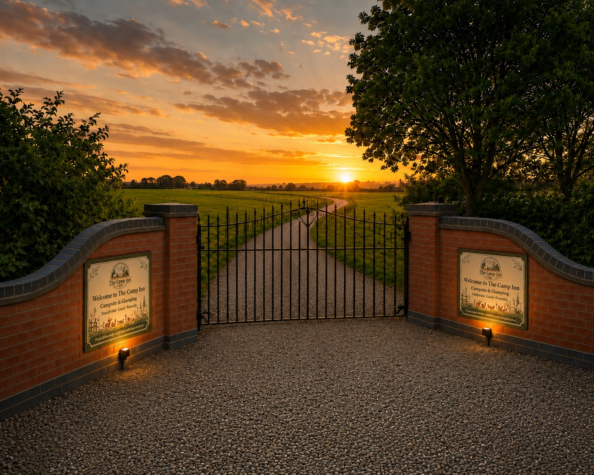
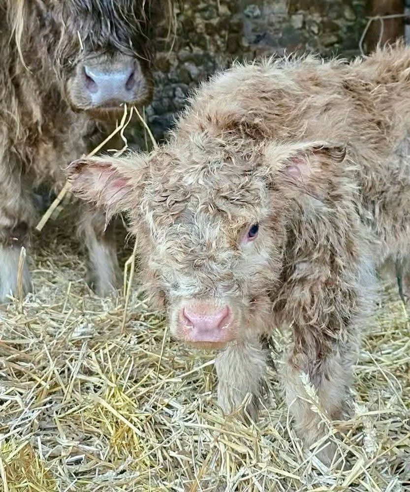
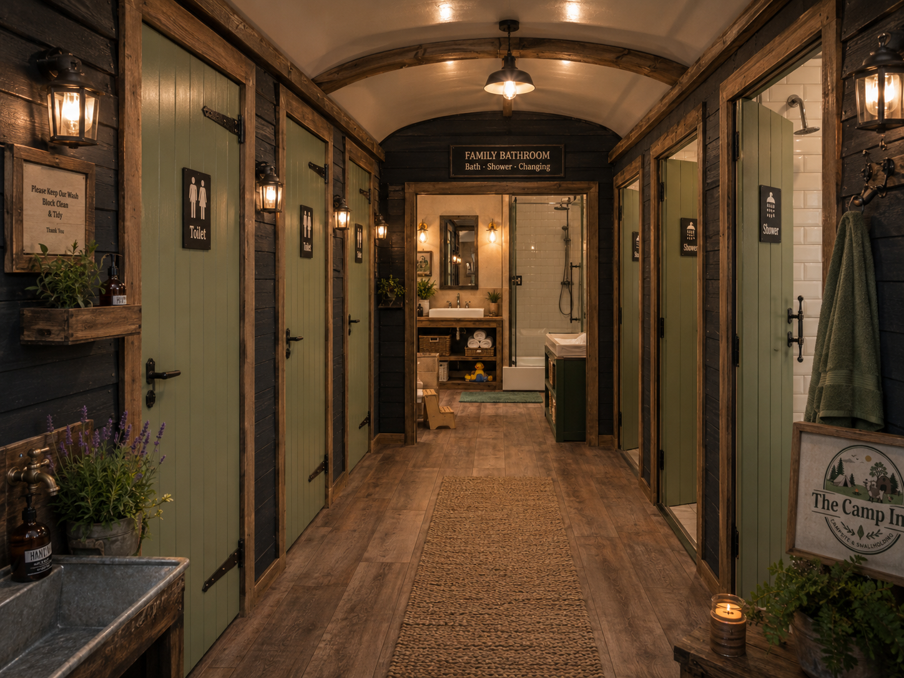

Clean energy
Solar and renewable power supporting the site.
A family-run campsite and smallholding built with nature in mind — somewhere to camp, meet the animals, slow down and make proper memories.

welcome to the countrysideNot just somewhere to park up and disappear behind a caravan door. The Camp Inn is being created as a relaxed little countryside community: plenty of space, animals to meet, good food, muddy boots and evenings that last until the light goes.
No-faff pricing. Up to six people included, with dogs, awnings and pup tents included where permitted.

Come and say hello to the smallholding. Alpacas, goats, sheep, chickens and plenty more characters are becoming part of life here.
Explore onsite fun →
From a simple grass pitch to a fully serviced stay, choose the patch that suits the way you camp.


Solar and renewable power supporting the site.
Careful water use and filtration built into our plans.
Planting, wildlife and countryside at the heart of it.
Clean, comfortable and practical, but still with a little Camp Inn character. Our plans include individual toilets and showers, a dedicated family bathroom, plus The Camp Inn café & bar.
These are vision images for facilities currently being created ahead of opening.


We’re building The Camp Inn from the ground up. Follow the progress, meet the animals and plan your first stay.

Booking connection coming next — this front end is ready for the campsite booking system.